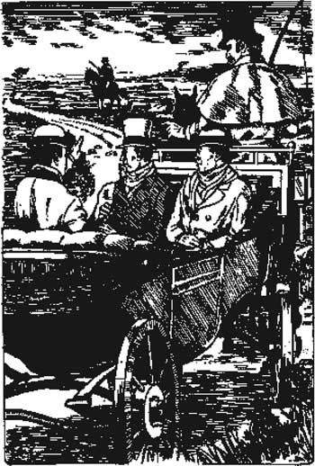

Listen to Part 1:
6

Baskerville Hall
Vào sáng thứ Bảy, Sherlock Holmes đến nhà ga Paddington với tôi.
Cậu ấy nói: "Đây là một vụ nguy hiểm, Watson. Hãy ở gần ngài Henry. Đừng để ngài ấy đi một mình trên đồng cỏ vào ban đêm".
Tôi nói: "Đừng lo lắng, Holmes. Tôi đã mang theo súng lục của mình".
Holmes nói: "Tốt lắm. Viết thư cho tôi mỗi ngày. Hãy kể cho tôi biết cậu nhìn thấy và nghe được gì. Hãy cho tôi biết tất cả sự thật, chi tiết mọi thứ".
Tôi tạm biệt Sherlock Holmes và gặp ngài Henry Baskerville cùng tiến sĩ Mortimer tại nhà ga. Chuyến tàu đến Devon mất ba giờ. Chúng tôi nhìn ra ngoài cửa sổ ngắm nhìn vùng nông thôn xanh tươi. Cuối cùng, chúng tôi đã đến Dartmoor. Sau đó, vùng nông thôn chuyển từ xanh sang xám, và chúng tôi nhìn thấy những ngọn đồi bằng đá đen gồ ghề.
Chúng tôi xuống tàu tại nhà ga nhỏ ở làng Grimpen. Một người đánh xe đang chờ với xe ngựa để đưa chúng tôi đến Baskerville Hall. Khi đi dọc theo con đường làng hẹp, tôi thấy một người lính cưỡi ngựa. Người lính đeo súng và đang quan sát con đường.
Tôi nói với người đánh xe: "Tại sao người lính đó lại canh gác con đường? Có chuyện rắc rối gì sao?"

Listen to Part 2:
'Tại sao người lính đó lại canh gác con đường? Có chuyện rắc rối gì sao?'
'Vâng, thưa ông,' người đánh xe trả lời.
'Vâng, thưa ông,' người đánh xe trả lời. 'Một tù nhân đã trốn thoát khỏi Nhà tù Dartmoor. Hắn là một tên rất nguy hiểm. Tên hắn là Selden. Hắn là một tên giết người nguy hiểm'.
Tôi nhìn sang đồng cỏ trống trải. Một cơn gió lạnh thổi qua và khiến tôi rùng mình. Holmes tin rằng có ai đó muốn giết ngài Henry Baskerville. Giờ đây, lại có thêm một tên giết người nữa đang ở ngoài đồng cỏ. Tôi cảm thấy nơi cô đơn này rất nguy hiểm. Tôi muốn quay trở lại London.
Có những cây cổ thụ rậm rạp xung quanh Baskerville Hall. Nó trông giống như một tòa lâu đài. Nó đứng một mình giữa đồng cỏ trống trải.
Chúng tôi dừng lại bên ngoài Baskerville Hall. Tiến sĩ Mortimer nói: "Tôi phải rời các ông ở đây. Tôi có rất nhiều việc phải làm. Và vợ tôi đang đợi tôi ở nhà".
Ngài Henry nói: "Tôi hy vọng ông sẽ đến dùng bữa tối sớm thôi".
Tiến sĩ Mortimer nói: "Tôi sẽ đến. Và nếu ông cần tôi bao giờ, hãy cho người tới báo bất cứ lúc nào, ngày hay đêm". Sau đó, tiến sĩ Mortimer cưỡi xe ngựa đi mất.
Một người đàn ông để râu đen rậm và mặt xanh xao bước ra khỏi nhà. Ông ấy chào ngài Henry.
Ông ấy nói: "Chào mừng ngài đến Baskerville Hall, thưa ngài. Tôi là Barrymore. Tôi đã làm người hầu ở đây nhiều năm. Vợ tôi và tôi đã chuẩn bị ngôi nhà này cho ngài. Tôi sẽ đưa các ông đi xem quanh nhà nhé?"
Ngài Henry nói: "Vâng, xin cảm ơn, Barrymore. Đây là Tiến sĩ Watson. Ông ấy sẽ là khách của tôi trong vài ngày".
Listen to Part 3:
Barrymore nói: "Rất tốt, thưa ngài". Ông ấy cầm vali của chúng tôi vào nhà.
Tôi nhìn Barrymore thật kỹ. Liệu ông ấy có phải là người đàn ông có bộ râu đen đã theo dõi ngài Henry ở London không? Tôi không chắc.
Ông và bà Barrymore đã chăm sóc ngôi nhà rất tốt. Mọi thứ đều ngăn nắp. Nhưng ngôi nhà này thật lạnh lẽo và cô đơn. Rắc rối đang ở đây.
Tối hôm đó, tôi viết thư cho Sherlock Holmes. Tôi kể cho ông ấy biết tất cả những gì tôi đã nhìn thấy và nghe được. Trong khi viết, tôi nghe thấy một âm thanh - tiếng phụ nữ khóc. Người phụ nữ duy nhất trong nhà là bà Barrymore. Tôi tự hỏi tại sao bà ấy lại buồn như vậy.
Mục lục
- Trang tựa
- Mục lục
- Ghi chú về câu chuyện này
- Nhân vật trong truyện
- 1 Ông Sherlock Holmes
- 2 Lời nguyền của dòng họ Baskervilles
- 3 Vụ án hóc búa
- 4 Sir Henry Baskerville
- 5 Chiếc ủng mất tích
- 6 Biệt thự Baskerville
- 7 Gia đình Stapleton ở Merripit House
- 8 Báo cáo đầu tiên của Tiến sĩ Watson
- 9 Đèn sáng trên đồng hoang
- 10 Người đàn ông trên đồng hoang
- 11 Nông trại High Tor
- 12 Đặt bẫy
- 13 Quái thú Hound của dòng họ Baskerville
- 14 Trở về phố Baker
- Những điểm cần lưu ý khi đọc truyện
- Danh sách các tựa sách dành cho trình độ Sơ cấp
- Trang bản quyền